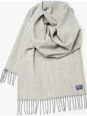

Scarves
Reversible Plaid
Two classic patterns in one great look: This supersoft and cozy reversible scarf instantly doubles your street-style cred. 100% acrylic.
26.99
Fringed Plaid
Generously sized, extra soft and featuring a dazzling fringe, this scarf is rendered in a versatile gray, black and white plaid. Expertly beat the cold with style. 100% acrylic.
18.99
Multi Color
The Who What Where Oversize Color-Block Square Scarf is big, bold, and designed to twist and wrap any way you wish. All the colors of the season are harmonized in this oversize accent, so you can adjust to contrast or match your outfit; soft and lush, it’s your stylish standoff against cold AC and unexpected fall breezes. 100% acrylic.
22.99
Northern Lights
Handmade by women in Agra, sales provide medical and educational support in this remote area of India. Crinkly 100% cotton.
29.99
Ombre Infinity
A dip-dye effect adds color and dimension to a cozy infinity scarf featuring a soft, chunky knit. 100% acrylic.
11.99
Ashby Twill
Woven with a 'broken' twill technique fo a slight zigzag texture, the Ashby Twill is Made in USA with 100% merino wool and finished with heather gray fringe.
70.99
Wool Cable Knit

Warm yourself with this women's natural cable knit scarf, crafted from 100% Merino wool. Imported.
49.99
Etro Paisley-Print Silk
Luxurious silk scarf with subtle paisley pattern. 100% silk.
26.99